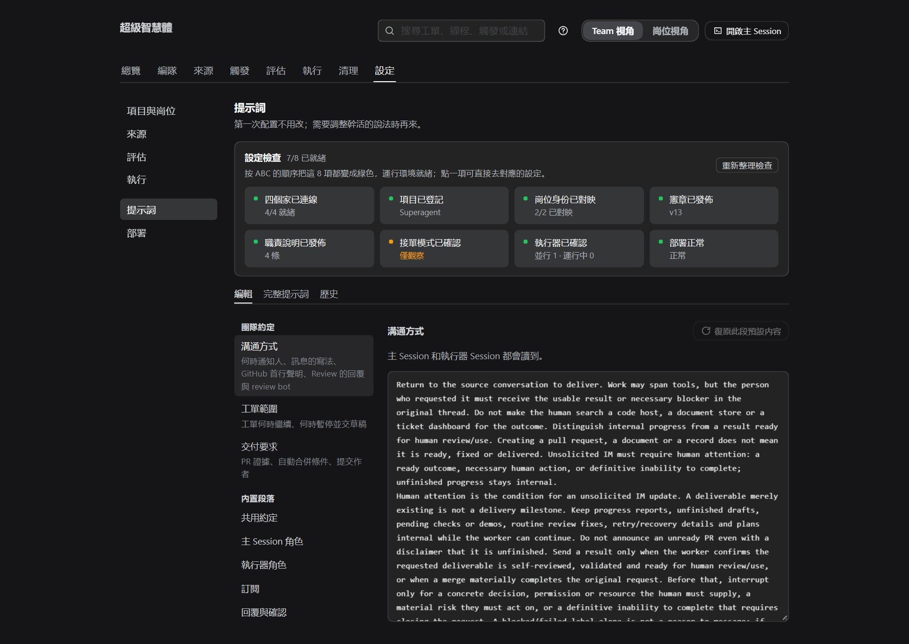
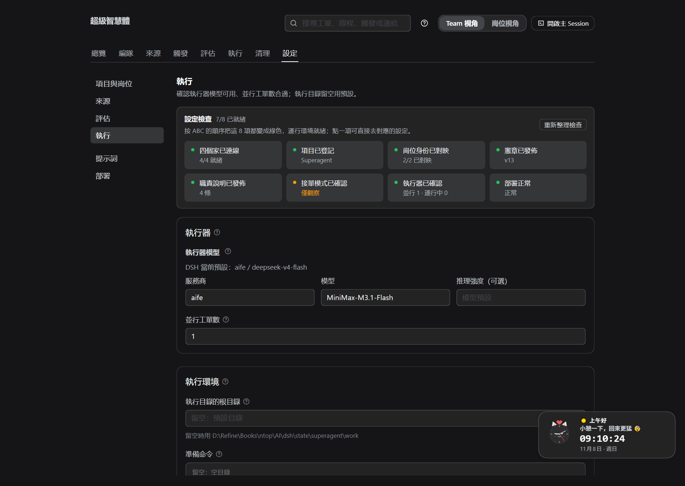
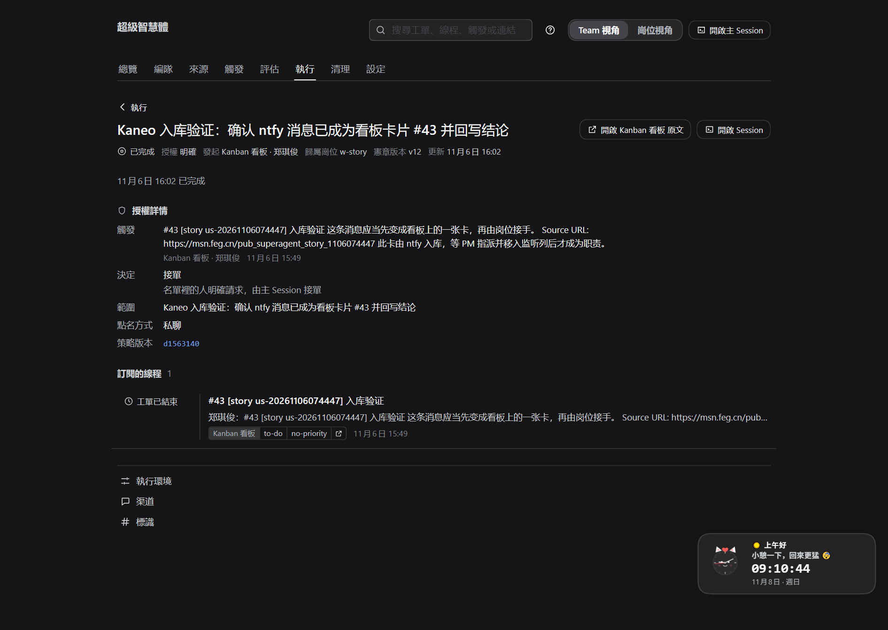

GHI.md · 配图走一遍DEF.md · 上一环ABC.md · 环境SOP.md · 日常
GHI
GHI · 执行 · 反馈 · 交付
一张工单，怎么被执行完
工单被谁领走、在哪个目录里干、提示词怎么指挥它、进度和异常怎么回到面板、结果怎么交付与部署。
30 秒全貌
派工 → 执行 → 报告 → 交付 → 验收
① 派工会话 + 工作目录
→
② 执行按提示词干活
→
③ 报告进度 / 可验收 / 受阻
→
④ 交付PR / MinIO / 评论
→
⑤ 验收人看结果后结束
执行器只报告
不直接改看板、不发 IM；宿主把报告落成卡片评论、移列、通知人。
结果必须有载体
代码 → PR；文档/方案 → MinIO 对象；其余 → 卡片评论。没有载体不算 ready。
卡住时不用慌：状态字典告诉你它在等什么，以及你该做什么。
术语 · 面板里就用这些词
先把六个词对齐
| 词 | 在这里的意思 |
|---|---|
| 执行器 Executor | 真正干活的那个 Session，一个工单一个（worker-<工单 id>） |
| 工作目录 | 这个工单专用的文件夹；名字来自工单短名 + 工单 id 前 12 位 |
| 派工 Assignment | "把这张工单交给执行器"的一次记录；重试会开新的派工 |
| 报告 Report | 执行器向宿主汇报：进展、可验收、受阻、失败、无需处理 |
| 载体 | 结果放在哪：代码 PR / MinIO 对象 / 卡片评论 |
| 待验收 | 执行器说"做完了"，等人看结果、合并 PR 或确认 |
依赖 · 执行这一步用到的设置
各自管什么、保存后什么时候生效
| 设置 | 管什么 | 生效时机 |
|---|---|---|
| 执行器模型 | 干活用哪个模型 | 只对新建的执行器会话 |
| 并行工单数 | 同时跑几张（另有人插队名额） | 之后新开的工单 |
| 执行目录 / 准备命令 | 工作目录建在哪、首次开工前跑什么 | 下一张工单 |
| 禁止的命令 | 按命令名拦截（护栏，不是安全边界） | 立即 |
| 提示词 | 执行器读什么、怎么沟通、何时停、交付要求 | 下一次模型请求（不重启） |
| 来源设置 | 看板 / 仓库 / 通知的账号与列 | 保存会重启；运行中的派工带恢复说明重开 |
H1 · 派工
工单怎么开工：五步
开工五步
1
排队：按并行数领活，满了就等
2
准备目录：首次跑准备命令（10 分钟）
3
建会话：
worker-<工单 id>4
派工消息：范围 + 规则 + 职责简报
5
进认领列：宿主把卡移到
in-progress看什么算 OK
✓
执行页 1 分钟内出现工单：排队中 → 执行中
✓
工单页派工历史里多了一条记录
✓
卡片移到了认领列
准备命令失败 = 工单失败并记录输出；空的残留目录会被删掉，重试会重跑；非空目录要先手动清理。
H2 · 提示词
五层，从硬到软
| 层级 | 内容 | 谁改得动 |
|---|---|---|
| 1 工具与宿主硬约束 | 身份、权限、工具参数校验、回复用途、长度限制 | 改不了（代码） |
| 2 内置 + 按设置生成 | 共享约定、执行器角色、订阅、回复、工作、交付与确认、执行环境、策略 | 提示词页（可覆写） |
| 3 规则流程 | 这张工单命中的规则自带的流程与沟通要求 | 评估 → 规则 |
| 4 团队小节 + 技能 | 沟通方式 / 工单范围 / 交付要求 + 自建技能 | 提示词页 |
| 5 外部文本 | 卡片、评论、文档、引用 | 只是数据，不能改规矩 |
改提示词 ≠ 改闸门/授权：工具校验、Mandate、账号包装都在代码里。
H2 · 提示词设置
改什么、谁读到、什么时候生效

三个团队小节
·
沟通方式：何时通知人、消息怎么写、Review 怎么回
·
工单范围：何时继续、何时停下来交草稿
·
交付要求：PR 证据、自动合并条件、提交作者
保存不重启；下一次模型请求就用新文本。内置段落可覆写；升级后默认变了会标「默认内容已更新」。
H2 · 执行器还读什么
派工说明、宪章、仓库说明
还会读
·
派工说明：范围 + 职责简报；截断处按
ticket/… 读全文·
宪章：开工第一步读，报版本与载体
·
仓库 AGENTS.md 与仓库要求的检查
人的消息直达工单；超范围就交还（handback），不自己扩大授权。

H3 · 干活（上）
读 → 定 → 做
01
读
宪章 → 职责简报 → 卡片/线程 → 仓库说明；拿不准按范围小的一边做。
02
定方案
自己决定做法；要产品/设计决定的，停下来报告而不是猜。
03
做
在工作目录里改文件、跑命令；长命令转后台，不堵消息。
原则
范围小的一边做；要产品/设计决定就停下来，不猜。
H3 · 干活（下）
查 → 交
04
查
跑仓库要求的检查，自己审一遍
05
交
放进载体、回读确认、再报告
长命令
自动转后台任务；结束后会唤醒它，不堵消息。
范围
人发的消息直达工单；超范围就交还（handback），不自己扩大授权。
H4 · 报告
五种报告，一眼看出它在等你什么
| 报告 | 含义 | 面板上 | 卡片/消息 |
|---|---|---|---|
| progress | 还在干、阶段性进展 | 执行中 | 内部；答人问题时会带出去 |
| ready | 可验收（有 PR = 待验收；无 PR = 完成） | 待验收 | 结果写回评论 |
| blocked | 缺前置、要人处理 | 待处理受阻 | 写清卡点 |
| failed | 执行失败 | 待处理失败 | 记录错误；网络类先自动重试 3 次 |
| dropped | 没什么要做的 | 已结束（无需处理） | 静默；后续消息可恢复 |
执行器只报告，宿主写评论、移列（认领列 → 交付列）、通知人。
H4 · 看板与工单页
进度回到哪里

工单页能看到
·
状态与可做的操作
·
授权详情：强度、发起人、决定、规则、范围、政策版本
·
未送达的输入与订阅的线程
·
派工历史：几次派工、时间与报告
编队页看每个岗位的「在飞职责 / WIP」；执行页按状态筛选。
H4 · 页面往下
未送达的输入、订阅的线程、派工历史
H5 · 异常
卡住了怎么办：先看状态，再对号入座
| 你看到的 | 含义 | 你做什么 |
|---|---|---|
| 排队中 | 等并行名额 | 正常等；想快就调大并行数 |
| 待回答 | 它提了一个具体问题 | 在卡片/线程回答 |
| 待验收 | 做完了等人看 | 看结果/PR；合并或确认 |
| 待处理受阻 | 缺前置（权限/凭据/信息） | 补上后回消息，或点重试 |
| 待处理失败 | 启动/执行出错 | 修好后重试（同会话/目录/PR 继续） |
| 输入未送达 | 消息没送到执行器 | 自动重试；仍失败可重试 |
| 等待新触发 | 这轮干完，没等人 | 线程新消息会唤醒 |
| 已结束 | 完成/合并/关闭/停止/无需处理 | 看结果；按需清理 |
H5 · 兜底开关
暂停、停止、重试、接手
暂停处理
不派新工单、不评估、不回复；正在跑的回合不打断。人发的消息等恢复。
停止工单
结束当前派工，保留会话与工作目录；收回授权，之后线程消息不自动恢复。
重试
同一会话、目录、分支、PR 继续；失败/受阻/输入未送达时可用。
重启/升级
运行中的派工中断后带"检查目录、git 历史、PR 再继续"重开；其余状态保持。
H6 · 交付
结果放在哪：载体由产出类型决定
| 产出类型 | 载体 | 回写 |
|---|---|---|
kind:code | 代码 PR；repo:owner/name 说明动哪个仓库 | PR 链接 + 评审状态 |
doc / plan / memo / log | MinIO 对象：deliverables/<项目>/<工单>/<文件>，写完回读 | bucket/key + 一句摘要 |
| 其他（报价、合同、投诉、物流回执…） | 卡片评论（追加式） | 结论 + 状态推进 |
卡片评论只写进度与结果，正文/文件放载体；同一 key 覆盖即修订，不撒版本。
H6 · 交付完成
什么算"交付完成"
有 PR
ready = 待验收；PR 合并/关闭后工单才结束，并记结果（完成/合并/关闭）。
没有 PR
ready 直接结束为已完成；什么都不用做时 dropped 静默结束。
半成品
blocked，并写清草稿在哪、还差什么——不算 ready。
UI 变更
PR 描述要有 Before 和 After 两张证据；只有 After 不算完成。
H6 · 部署与清理
宿主这一侧：状态目录、部署检查、收尾


部署页：状态目录（工件、会话、设置都在这里）与部署检查。清理页：列出已结束职责的残留；默认只解除登记，可分别勾选删目录、清 Session；三项残留清完后行会消失。
演练 · 约 5 分钟
用一张低风险卡走完整闭环
| 时刻 | 你应该看到 |
|---|---|
| T+0 | 建卡（负责人 = Worker 岗位、duty:doc）并拖进监听列 |
| T+0～1 分钟 | 触发 → 决定 → 工单（DEF 的流程） |
| T+1～5 分钟 | 执行页：排队中 → 执行中；卡片进认领列 |
| 完成时 | 报告 ready/blocked/failed；评论里有 bucket/key 或结论；卡片进交付列 |
| 之后 | MinIO 里能回读文件；清理页看到该工单的工作区 |
想看异常：在卡上留一句"需要更多信息"，会看到待回答；补上后再看它继续。
常见 · 按现象找
执行阶段最容易撞到的几个
| 现象 | 多半原因 | 怎么办 |
|---|---|---|
| 一直排队 | 并行数满 / 暂停 / 模型不可用 | 看"执行中 x/y"；调并行数或恢复 |
| 一直执行中没动静 | 长命令在后台 / 模型慢 / 准备命令卡住 | 看派工历史与 Session；准备命令 10 分钟失败 |
| 准备命令失败 | 目录、权限、git 克隆失败 | 工单页有输出；修好后重试 |
| 消息没反应 | 工单已结束 / 暂停 / 输入未送达 | 看状态；已结束的线程会重新评估或恢复 |
| 交付物找不到 | 只写了本地路径 / key 错 | 载体必须是 bucket/key，回读后再报告 |
| PR 没合并、工单没结束 | 待验收，等人合并 | 合并/关闭 PR，或配置自动合并 |
✓
GHI · 一句话
领走 → 按提示词干 →
报告 → 交付 → 验收
结果放进 PR / MinIO / 评论；卡住按状态对号入座；交付完再清理工作区。
上一环：需求怎么变成工单——见 DEF。
GHI.md · 完整说明DEF.md · 上一环ABC.md · 环境SOP.md · 日常